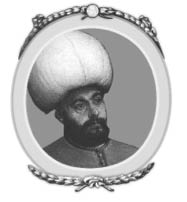
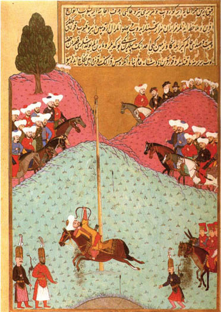
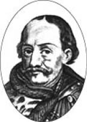
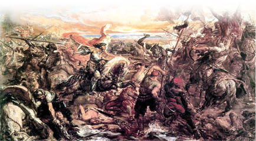

VI : II. MURAD
1421-1451

Adı ikinci sırada olmasına rağmen Murad babasının ölümünden sonra tahta geçti. Hükümdarlığı, bir kere özel hayatıyla inzivaya çekilmesi ve bir kere de tahtan çekilmesiyle iki kısa dönem ara yaşadı ve otuz yıl boyunca devam etti. Ancak iki durumda da vârisi olan oğlunun genç ve tecrübesiz olmasıyla devletin düştüğü durum yüzünden geri dönmek zorunda kaldı. Adil davranmak istemesiyle ve komutan olarak kuvvetli ve kabiliyetli olmasıyla babasına benziyordu.
Murad’ın hükümdarlığının başladığı yıllarda, son derece aptalca davranan Rum İmparatoru Manuel, Murad’ın tecrübesizliği ve gençliğinden fayda sağlamak istiyordu. Bu bilginin kaynağı olarak doğru ya da yanlış Sultan Bayezid’in oğlu Mustafa olduğu söyleniyordu. Kendisi Angora (Ankara) Savaşı’ndan sonra ortadan kaybolmuştu. Bu iddiasını savunarak Manuel, tahta değişiklik olduğu zaman da Osmanlı Hanedanı’yla bir anlaşma yapmak istedi. Türkler tarafından Rum İmparatorluğu’ndan alınan Gelibolu ve Karadeniz kıyısındaki birçok şehir geri verildi.
İslam’a karşı yapılan bu skandal ihanet karşısında, Mustafa Avrupa’da sözde bir ordu kurdu ve Murad yanlısı bölükleri bozguna uğrattı. Daha sonra İmparator Manuel’in sağladığı teknelerle ordusunu Çanakkale Boğazı’ndan Asya’ya geçirdi. Murad, bu acil duruma el koymak için bütün gücünü ve enerjisini ortaya koydu. Mustafa’nın ordusunun büyük bir bölümünü bozguna uğrattı, geri kalanını da yendi. Mustafa tekrardan Gelibolu’ya püskürtüldü, burada mahsur kaldı ve ele geçirildi. Sahtekâr olarak adlandırıldı ve asıldı.15
15 Düzmece Mustafa hadisesi. (çev.)
Murad, tahtında hak iddia eden kişiyi yenerek, İmparator Manuel’in hainliğine karşı intikam almış oldu. Rum İmparatorluğu’na, İstanbul’u alarak son vermeye karar verdi. Bu amaç uğruna gazilerden oluşan bir ordu kurdu. Haliç’ten Marmara Denizi’ne kadar toprak tahkimatı yaptı ve şehri kuşattı. Büyük toplarla şehrin duvarlarını bombaladı. Toplar Osmanlı ordusun tarafından ilk defa kullanılmıştı; ancak çok etkili olamadılar. Ayrıca hareket edebilen kuleler kullandı, bu kulelerle şehrin duvarlarına ulaşabilirdi. Eğer şehri ele geçirirlerse Murad ganimetlerin en değerlilerinin askerlerin olacağını ilan etti. Saldırıyı yönetecek olan beş bin “Dervişe”, şehirdeki bütün rahibelerin kendilerine cariye olarak verileceğine dair söz verdi. Zafer için bir çok teşvik edici şey olsa da saldırı başarısız oldu. Şehirde yaşayan Rumlar son derece üstün bir kahramanlık göstererek duvarları savundu. Savaş sırasında bir anlık ortaya çıkan Bakire Meryem görüntüsü sayesinde zafer için kamçılandıkları ve saldırıyı bastırdıkları söylenir. Rum imparatoru kurnazca planlar icra ederek Murad’ın aklını başka yönlere çekti ve sultan geri çekilmek zorunda kaldı. Eğer Murad saldırısında ısrarcı olsaydı büyük ihtimalle şehri almış olurdu.
Asya’da sultana bir başka rakip daha çıkmıştı, Mustafa. Murad’ın en küçük kardeşi olan Mustafa için normalde ailevî bir uygulama olan kardeş katli kuralı es geçildi ve öldürülmedi. Yeni hak iddia eden kişi Karamania (Karaman) ve Kermia (Germiyan) beyleri tarafından destekleniyordu. Onların yardımıyla Asya’da bir Osmanlı ordusunu yendi. Bu durumda Murad İstanbul’un kuşatmasının durdurulmasına karar verdi ve ordusunun ana bölümünü Küçük Asya’ya yolladı; çünkü diğer yandan tahtı tehlike altındaydı. Mustafa’nın ordusuyla olabildiğince çabuk karşılaşmaya çalıştı ve onları bozguna uğrattı. Murad’ın kardeşine karşı merhamet gösterme şansı tanımadan ki, iradesine yenik düşebilirdi de Mustafa yakalandı ve yakalayan kişiler tarafından da asıldı. Daha sonra Murad Karamania (Karaman) ve diğer beyliklerin kendisine bağlılıklarını sunmaları için uğraştı.

Hünername’de Sultan II. Murad’ı gösterir bir minyatür
Bu arada İmparator Manuel öldü, yerine John Palaiologos geçti. Murad İstanbul kuşatmasını yinelemek yerine, imparatorla yeni bir anlaşma yapmaya karar verdi. Kendisine ağır vergiler dayattı ve şehrin duvarları dışında kalan egemen olduğu bütün yerlerden mahrum bıraktı. Bu sayede imparatorluk birkaç yıl rahat nefes aldı.
Rum imparatoru tarafından Venedik Cumhuriyeti’ne satılan Selanik olayı gibi, Makedonya’yı da aynı şekilde yapmak isteyen imparatoru, Murad reddetti, bir zamanlar Osmanlı egemenliğinde bulunan bir şehri Hıristiyan güçlerine vermesini kabul etmedi. Son yüz yılda üç kere Osmanlılar tarafından kuşatılmıştı, aynı zamanda Rumlar tarafından da sıklıkla bozguna uğratıldı. 1430 yılında Murad saldırmak için bir ordu hazırladı, Venediklilerin güçlü bir direniş göstermesinden sonra, Murad şehri kuşattı ve ele geçirerek toprakları Türk İmparatorluğu’na kattı. Murad’ın askerlerinin toplu katliam yapmasına izin vermeyerek büyük bir merhamet örneği gösterdiği düşünülür. Ancak Rum halkı köle olarak satıldı, sayıları o kadar fazlaydı ki, güzel kızlar bir çift bot parasına satıldı.
Küçük Asya’da ortaya çıkan başkaldırılar, Rum imparatorunun hükmü altında olanların tımarı altına girmesi ve Selanik’i ele geçirme olayları Murad’ın birkaç yılını aldı. Kuzey sınır komşusu olan Macarlarla uzun soluklu savaşlara girdi. Osmanlılar Danube (Tuna) nehrinin karşısında durağan mücadelelere girdi, çok büyük bölgeler harap oldu ve nüfusun çoğu tutuklanarak köle olarak satıldı. Tam da bu sırada Macaristan’da bir kahraman ortaya çıktı. Ünlü Hunyadi, son Kıral Sigismund’un gerçek oğluydu. Bir liderin oğlu olarak dünyaya geldi, çok iyi bir komutan değildi; ancak çok cesur bir savaşçıydı. Savaşlarla farklı bölgelerde imtiyazlar elde etti. Osmanlı’ya karşı büyük bir düşmanlık besliyordu. Süvari sınıfının başında ilerlerken her zaman parıldayan gümüş bir zırh giyerdi, bu yüzden ona Beyaz Şövalye denirdi. Köylüler tarafından haklı olarak vatansever ve ulusal kahraman olarak seçilmişti. Bununla birlikte kana susamış bir zalimdi. Savaşlarda ele geçirilen bütün tutsakları katletti. Bu olaydan büyük zevk alırdı, onun bulunduğu şölenlerde misafirler ölmekte olan adamların feryatları ile eğlendirilirdi.

Hunyadi Yanoş
Yirmi yıl boyunca Hunyadi, Osmanlı ordusuna korku saldı. Seksen bin Osmanlı askeri tarafından kuşatılan Danube’nin (Tuna) kuzeyinde bulunan Hermanstadt’da ilk kez karşı karşıya geldiler. Osmanlı’ya karşı yirmi bin Macar askeri topladı, büyük kalenin verdiği rahatlıkla, aralarındaki sayı farkına rağmen onları yenilgiye uğrattı. Komutanlarıyla beraber yirmi bin Osmanlı katledildi. Geri kalanlar ise kaçıştı. Murad başka bir paşanın komutasında seksen bin asker daha yolladı. Hunyadı yine Varsag’da onları katlederek yendi. Bu kayda değer zaferler Avrupa’da büyük coşkuyla karşılandı. Tekrardan Osmanlıları Avrupa’dan atmak için bir saldırı planlamaya başladılar. Bu amaç için bir koalisyon düzenlendi. Macaristan ve Lehistan Kral Ladislaus’un altında toplandı, ayrıca Eflak ve Bosna da onlara katıldı. Önceki Kral Stephen Lazariwitch ile Sırplar ise Osmanlı’nın değişmez müttefikiydi, onları Asya ve Avrupa’daki bir çok savaşta destekledi. Şimdi ise Osmanlı’yı bu durumda terk edip, Stephen’in vârisi olan George Brancowitch Osmanlı’ya karşı kurulan birliğe katıldı. Bu bileşme Papa Eugenius tarafından desteklendi. Papanın elçisi Kardinal Julian Cesarini ile birlikte destek vermek için bir ordu yolladı. Avrupa’ya sadık olan her yerden, savaş uğruna paralar toplandı. Fransız ve Alman şövalyelerinden oluşan büyük bir birlik de onlara katıldı. Hıristiyanların İslam’a karşı büyük bir dinî istekle karşı gelmesiyle, yeni bir Haçlı ordusu kuruldu. Birleşmiş olan ordular Ladislaus’un komutasındaydı; ancak gerçek liderleri Hunyadi’ydi.
Cenova ve Venedik Cumhuriyetleri de destek verdi. O zamanlarda Osmanlı’nın deniz kuvvetleri yoktu, Birleşmiş Güçlerin sahip olduğu çok güçlü kadırgalar vardı ve yine Küçük Asya’da Karamania (Karaman) ordusuyla çatışan Murad’ın ordusunu Avrupa’ya geçirmesine izin vermezlerdi.
Birleşmiş Güçler bu koşullar altında 1443 yılında ordularını Danube’den (Tuna) geçirdiler. Masova ve Nisch’in (Niş) kıyısında Osmanlı ordusunu yendiler. Aynı ordu kışın Balkanlar’a geçti. Şimdiye kadar iki kere Komutan Diebitsch ve Gourko tarafından işgal edilen bölgede çok zor bir operasyon gerçekleştirdiler. Balkan dağlarının eteğinde girdikleri savaşta Türkleri yendiler. 1829 yılında Komutan Diebitsch’in yaptığı gibi Adrainople’ye (Edirne) geçmek yerine Hunyadi, sahip olduğu başarıdan memnun kalarak ordusuyla birlikte Buda’ya geri döndü. Burada ganimetlerinin gösterişini yaptı ve zafer kazandı.
Macarların Balkanlar’dan çekildiğini duyan Murad, tekrardan onlarla karşı karşıya gelmeyi planladı. Bu sefer Danube’den karşıya geçmelerine izin vermeyecekti. Bazı zorluklar çekerek ve Kardinal Julian ile Fransız bölüğünün karşı çıkmasına rağmen Ladislaus ile Szegeddin’de bir anlaşma imzaladılar. Anlaşmaya göre Sırbistan Osmanlı İmparatorluğu tımarından çıkarak bağımsız olacak ve Eflak Macarlara teslim olacaktı. Bu anlaşmanın hükümleri on yıl boyunca geçerli kaldı. Bu anlaşmada Ladislaus ile Murad Kur’an ve İncil üzerine yemin etti.
Murad bu zor durumu anlaşmayla atlattı; ancak savaştan dolayı çok yorgun düştü. Uzun zamandır reddettiği bedenî zevklerini yaşamak için ve hayatını bu şekilde geçirmek için tahtan çekilmeye karar verdi. Hâlâ kırk bir yaşında olmanın zindeliğini yaşıyordu; fakat çok fazla kilo aldığı söyleniyordu. İmparator V. Charles gibi bir manastırda inzivaya çekilmek istemedi, Roma İmparatoru Diocletian gibi çok güzel bahçelerle çevrili olan ve onun için hazırlatılan Magnesia’daki (Manisa) lüks bir saraya yerleşti. 1444 yılında Szegeddin Anlaşması’nın16 onaylanmasıyla amacına ulaştı ve on dört yaşındaki oğlu Mehmed’i onun yerine “Sultan” ilan edildi.
16 Edirne-Segedin Antlaşması. (çev.)
Bu olay Macarlar tarafından öğrenilince, Türklerle daha önce yapılan anlaşma üzerinde ani değişiklik yapılması gerektiği düşünüldü. Macar yönetimi Papa tarafından desteklenen Kardinal Julian’ın anlaşmayı bozmasını istedi. Karamania’da (Karaman) patlak veren isyanların haberi geldi. Çanakkale Boğazı’na hakim olan Genova (Cenova), Venedik ve Burgundy donanmalarının, Osmanlı’nın Küçük Asya’daki ordusunun Avrupa’ya geçmesini engellediğine inanılır. Türkleri ezerek Avrupa sınırlarından atmak onlara çok uygun göründü.
Kardinal Julian Macar yönetimine seslendi:
Şimdi kendi ümitlerinizi mi terk ediyorsunuz? Tanrınız ve Hıristiyan dostlarınıza kendi kaderinizi mi vadediyorsunuz? Bu öncelikli zorunluluk, Hıristiyanların düşmanına ettiğimiz kutsal yemini yok etmektir. Tanrı’nın dünyadaki elçisi Roma Dini Lideridir, onun izni olmadan ne söz verebilirsiniz ne de bir şey yapabilirsiniz. Onun adıyla sizin yalancı şahitliğinizi bağışlıyorum ve ordunuzu kutsuyorum. Şan ve şeref ile kurtuluş yolunda benim adımlarımı izleyin, hala tereddüdünüz var ise günahınızı ve cezanızı ben üstlenirim.
Tarihçi Gibbons “Bu sinsi vicdan muhasebesi onun saygı duyulan karakteri ve laubali kurulu tarafından desteklenmiş” diyerek düşüncelerini belirtmiştir. Macar yönetimi savaşa karar verdi, ettiği yemini göz ardı eden Kral Ladislaus anlaşmayı bozmaya karar verdi. İlk etapta Hunyadi bu duruma karşı geldi; ancak ona Osmanlı’yı yenerek ele geçirilecek topraklardan Bulgaristan’ın sözü verilince kendisi de ikna oldu. Anlaşmayla özgürlüğünü kazanan Sırp prensi kendi krallığına ek olarak alacağı toprak anlaşmasıyla birliğe katılmaya karar verdi.
Osmanlı’ya aynı anda savaş açmaya karar verdiler. Ancak topladıkları birlik daha önce Balkanlar’a yolladıklarından daha küçüktü. Daha önce onlara katılan Alman ve Fransız şövalyelerinin çoğu ülkelerine geri dönmüştü. Neredeyse on binden az asker Hunyadi bünyesinde kaldı. Onlara beş bin Eflak katıldı. Bulgaristan’ı istila ettiler, daha sonra Balkanlar’ı geçmek yerine Danube (Tuna) kıyılarına inerek Varna’ya yürüdüler.
Bu arada Osmanlılar, genç Mehmed’in savaş yönetiminde yetersiz kalmasından korkarak, inzivaya çekilmiş olan Murad’ı uyardılar. Aceleyle Küçük Asya’da bir ordu toparladı. Genovalıların hepsine adam başı bir duka altını ile rüşvet verdi, böylece Çanakkale’den hiçbir birlik geçmeyecekti. Hıristiyan ordusu onun niyetini anlamadan, hiç beklenmedik bir şekilde Varna’ya vardı. Ordusu Kral Ladislous’un ordusundan daha kalabalıktı. Buna rağmen ordunun iki ayrı kanadı kılıçtan geçirilerek geri püskürtüldü. Ordunun başında yer alan Murad, bir anlığına hayatında ilk kez aklını yitirdi ve kaçmaya niyetlendi. Ancak Anadolu beylerbeyi eğilerek atının dizgininden tuttu ve onu tekrar savaşması için teşvik etti. Savaş tekrardan başlamıştı. Yeniçeriler çok güçlü durdular ve Hıristiyan ordusunun büyük bir bölümünü püskürttüler. Kral Ladislaus attan düştü ve korunması için etrafını askerlerle çevirdi. Ancak savaş alanında ölüme terk edildi. Başı bir mızrağa çakılıp kaldı ve başka bir mızrakla da ihlal edilen anlaşmanın bir kopyası yukarıya kaldırıldı. Hıristiyanlar ölmüş krallarının başını miğferiyle birlikte mızrağın ucunda görünce, panik yaptılar ve aceleyle kaçtılar. Hunyadi zor bela canını kurtarabildi. Kardinal Julian anlaşmanın bozulması için verdiği tavsiyeyle savaş meydanında günahlarının kefaretini öldürülerek verdi. Diğer iki başpiskoposu da onunla aynı kaderi paylaştı. Yenilgi ve felaket hiç bu kadar hak edilmemişti. Hıristiyan ordusunun üçte ikisi savaşta katledildi. Onlardan daha fazla; ancak orantıda daha az Osmanlı askeri de aynı kaderi paylaştı.

Varna Savaşı
Muhteşem zaferi kazanan Murad tekrardan Manisa’daki sarayına inzivaya çekildi ve yerine oğlu genç Mehmed, sultan olarak geçti. Buna rağmen tarihte, bazı kralların yönetimden çekilerek inzivaya geçtikleri görülmüştür ve bazıları da tekrardan tahta geri döndürülmüştür; fakat ikinci defa tahtı terke etmesi ve tekrar geri gelmesi tarihte tektir. Çok az bir süre sonra Adrainople’da (Edirne) Yeniçeri ayaklanması meydana gelince, Murad tekrar zevkli inzivasından geri çağırılmıştır.
Yeniçeriler, şehri tahrip edip büyük bir zulme yol açtılar. Genç sultanın vekillerinin etekleri tutuştu. İtaatsizlik eden Yeniçerileri ancak güçlü birinin kontrol edebileceğini düşündüler. Murad tekrardan çekildiği inzivadan çağırıldı. Genç Mehmed’i av seferine çıkması için zorladılar. Onun yokluğunda Murad tekrardan Adrianopol’de (Edirne) ortaya çıktı ve gücü eline aldı. Av seferinden dönen Mehmed babasını yine eyer üstünde buldu. Murad askerleri tarafından coşkuyla karşılandı hatta itaatsiz Yeniçeriler bile ona olan bağlılıklarını sundu. Murad, artık Manisa’ya gidip inzivaya çekilmedi. İlk önce Rum imparatorunun kardeşleri tarafından bölünerek önemsiz prenslerin ya da Tiranların (Tiran olarak söz edilirlerdi) yönettikleri Morea (Mora) yarımadasını istila etti. Murad, Corinth tarafından savunulan kıstağın olduğu bölgeyi taarruz edip ele geçirmekte hiç zorlanmadı. İki tiranı zorlayarak imparatorluk tımarına girmesini sağladı.
Daha sonra Murad bütün dikkatini Sırbistan’a ve Macaristan’a çevirdi. Kosova’da, Macaristan, Sırbistan ve Bosna’nın Hunyadi tarafından liderlik edilen birleşmiş ordusunu bozguna uğrattı. 1389 yılında aynı yerde I. Murad Sırpları bastırmıştı. Büyük savaş sonrasında Sırbistan özgürlüğünü kaybetti ve sonunda Osmanlı İmparatorluğu’na dahil olarak bağlandı. Bosna vergi veren bir devlet haline geldi.
Murad Arnavutluk’u zapt etmekte pek de başarılı olamadı. Arnavutlar George Castriota önderliğinde yaşamaktaydı. Castriota’ya genellikle Scanderbeg (İskender Bey) olarak hitap edilirdi. Murad’ın devletine Müslüman olarak getirilmişti, ondan savaş sanatını öğrenmişti, sonra İslam’dan çıkarak Arnavutların başına geçti. Osmanlı istilacılarına karşı çete savaşları düzenlerdi, bunda da son derece başarılıydı. Murad bu bölgeyi kuşatmada başarılı olamadı. Bu, Murad’ın maceracı hayatındaki tek başarısızlığıydı. Murad’ın komutanları Hunyadi karşısında birçok başarısızlık elde etti. Ancak Murad iki kere karşı karşıya geldiği savaşta Macar kahramanını yenerek bu durumu telafi etti. Beyin kanaması geçirerek 1451 yılında vefat etti.
Murad’ın sultanlığı göz önüne alındığında, imparatorluğun itibarını yükseltmek için savaş hırsı olmadığı gözlenebilir. Genellikle savaş onun için zoraki bir durum olmuştur. Üç kere Karamania (Karaman) prensi ona karşı savaş açtı ve her seferinde Murad onu bozguna uğrattı. Her seferinde de tımarı altına girmesi için ısrar etti; ancak hiç egemenliği altına almadı. Rum imparatorunun davranışlarının ne kadar haince olduğu ve Murad’ın onun bölgesini en az seviyeye indirmesinde ne kadar haklı olduğu kanıtlandı. Venedik Cumhuriyeti elinde bulunan Selanik’e saldırması da aynı ölçüde haklı bulundu. Rum imparatorunun Selanik’i satmaya ve başka bir gücü getirerek yerleştirmesine hakkı yoktu. Kuzey sınırlarında meydana gelen savaşlar ise Macarların ve onlara yardım eden Hıristiyan güçlerinin zorlamasıyla oldu. Güçlerini birleştirdiler ve onlara karşı zafer kazandılar. Murad’ın hükümdarlığı zamanında otuz yıllık süreçte Osmanlı İmparatorluğu kendi bünyesine Küçük Asya’da bulunan bir çok eyaleti katmıştır. Sırbistan’ın ve Bosna’nın tamamen bağımlı hale gelmesi ve Selanik bölgesinin fethedilmesi ayrıca Morea (Mora) yarımadasının vergiye bağlanmasıyla Osmanlı topraklarını genişletmiştir. Ancak Eflak’ın tımardan çıkmasıyla da büyük bir alan kaybedilmiştir.
Türk tarihçilerinden alıntı yapan Gibbons şöyle açıklıyor:
Murad yiğit bir prensti, çok güçlü bir ruhu vardı. İşinde son derece sabırlıydı, öğrenmeye açıktı, bağışlayıcı, dindar ve yardımseverdi. Gayret göstereni ve bilimin her hangi bir dalıyla uğraşanı sever ve cesaretlendirirdi. Hiç kimse ondan daha fazla zafer kazanmamıştır. Belgrat tek başına onun saldırısına karşı koydu. Onun hükümdarlığı zamanında askerleri zafer kazanmıştır, halkı ise zengin ve güvenlik altında olmuştur. Herhangi bir ülkenin kontrolünü ele geçirdiğinde ilk işi oraya bir camii, kervansaray, hastane ve okul inşa etmek oluyordu.
Ancak Gibbon, bu tip övgülerin bir sultan tarafından yerinde bulunması konusunda şüphelerini ortaya koymuştur. “Erdemleri en zeki olan ve en yararlı olan, ona bağlı olanlara uzlaşmacı tavırlar sergileyen.” İşte bu açıklamaya katıldığını belirtiyor Gibbons.
Murad’ın dengeli ve adil olması önderlik yeteneğini doğruluyor ve aynı zamanda Hıristiyanlar tarafından da kabul ediliyor ve bu durum başarılı olarak addediliyor. Aynı zamanda layığı ile huzurlu bir ölüm yaşadığı da savunuluyor. Bulunduğu yaşın enerjisiyle ve askerî gücüyle nadiren savaşa girmiştir ve bu daha önceki provokasyonlarla uygun ve haklı bulunmuştur. Anlaşma yapıldığı zamanlarda onun söyledikleri çiğnenmez ve kutsal kabul edilirdi.17
17 Gibbon, viii. p. 242.